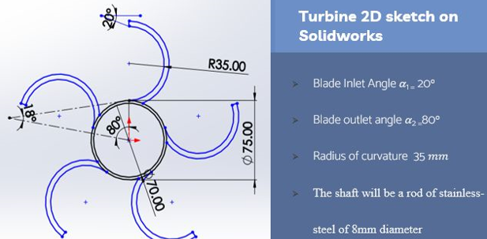
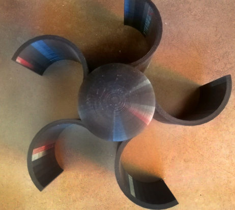
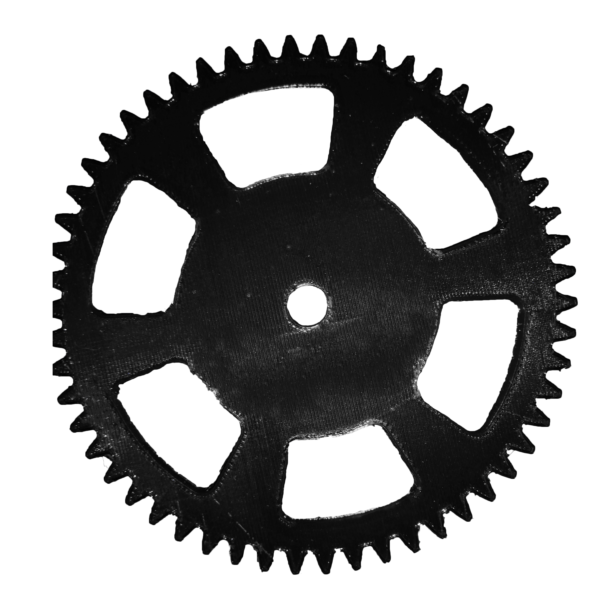
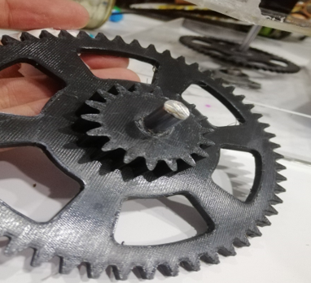
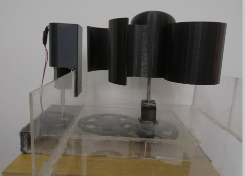

Micro Hydroelectric Power Station
Description
Small hydroelectric power station to show the principle of renewable energy and manufacturing of complex turbine blades using 3D printing. The turbine shaft is connected to a driving gear as an input to a small gear box located under the water entrance channel to transform the energy to the motor shaft.
Tasks
- Calculating the design parameters of a vortex turbine blade based on velocity triangle and speed of inlet water.
- Drawing 2D sketch of a vortex turbine blade with the calculated blade.

- Turbine 3D printing with PLA using FDM 3D printer.

- Gearbox gears designing on Solidworks and printing.

- Assembling gears shaft ( Stainless-steel rods) and the gearbox cover from plaxis.

- Fabricating motor holder, water channel and connecting all the parts to a small electrical generator.
